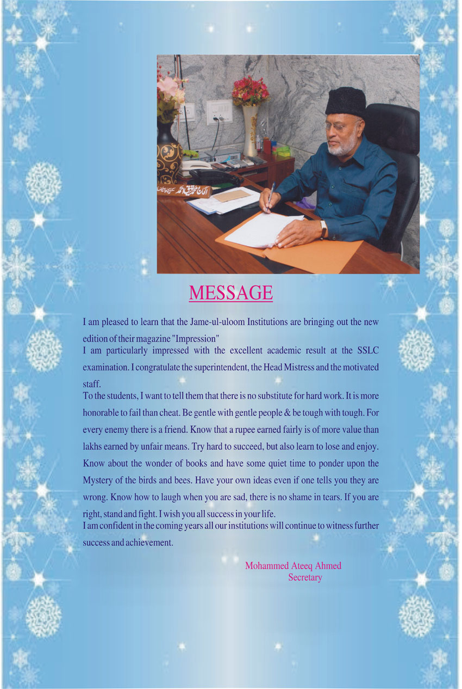
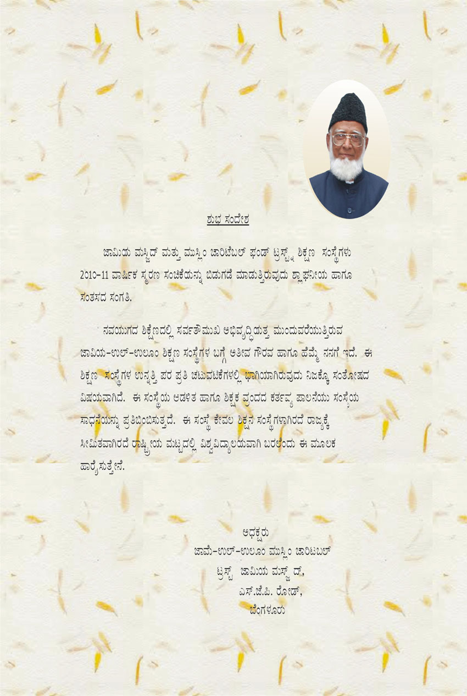
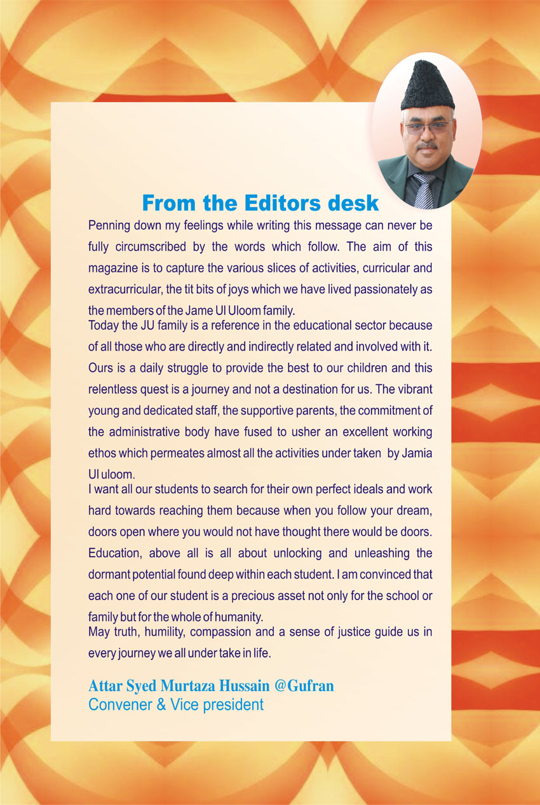
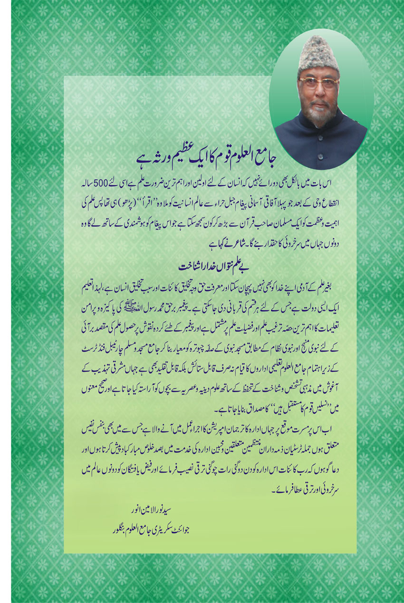
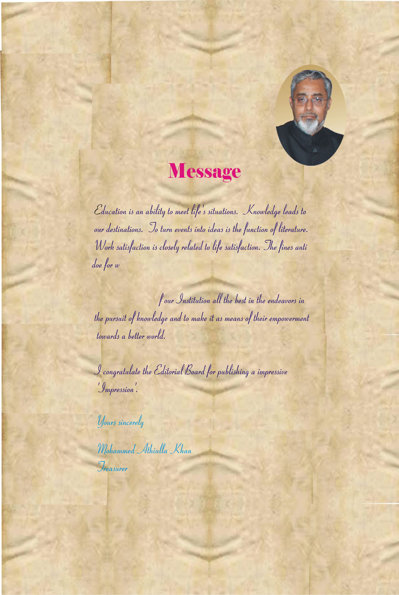
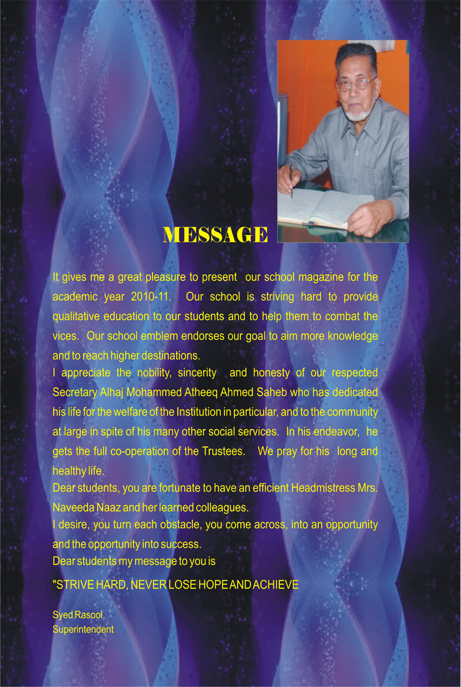
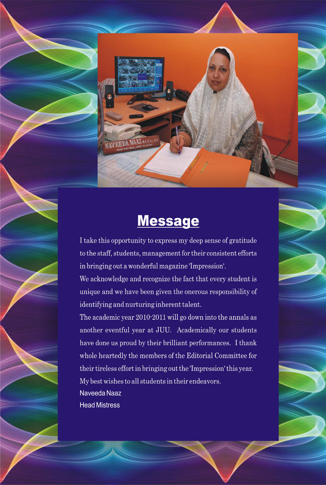
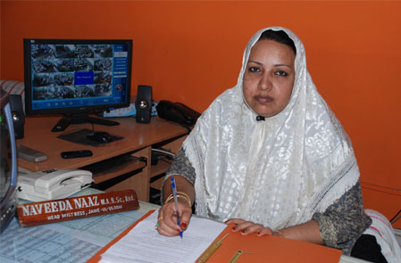

Message 2 · Secretary · Open full size ↗ Message from the Secretary
Mohammed Ateeq Ahmed, Secretary
I am pleased to learn that the Jame-ul-uloom Institutions are bringing out the new edition of their magazine “Impression”.
I am particularly impressed with the excellent academic result at the SSLC examination. I congratulate the superintendent, the Head Mistress and the motivated staff.
To the students, I want to tell them that there is no substitute for hard work. It is more honorable to fail than cheat. Be gentle with gentle people & be tough with tough. For every enemy there is a friend. Know that a rupee earned fairly is of more value than lakhs earned by unfair means. Try hard to succeed, but also learn to lose and enjoy. Know about the wonder of books and have some quiet time to ponder upon the Mystery of the birds and bees. Have your own ideas even if one tells you they are wrong. Know how to laugh when you are sad, there is no shame in tears. If you are right, stand and fight. I wish you all success in your life.
I am confident in the coming years all our institutions will continue to witness further success and achievement.
Mohammed Ateeq AhmedSecretary

Message 3 · President (Kannada) · Open full size ↗ Message from the President (Kannada)
Signed “Adhyakṣaru” (President), Jame-ul-Uloom Muslim Charitable Trust
A Kannada message headed “Shubha Sandesha” (a message of good wishes), with a portrait.

Message 4 · Convener & Vice President · Open full size ↗ From the Editors’ Desk
Syed Murtaza Hussain @ Gufran, Convener & Vice President
Penning down my feelings while writing this message can never be fully circumscribed by the words which follow. The aim of this magazine is to capture the various slices of activities, curricular and extracurricular, the tit bits of joys which we have lived passionately as the members of the Jame Ul Uloom family.
Today the JU family is a reference in the educational sector because of all those who are directly and indirectly related and involved with it. Ours is a daily struggle to provide the best to our children and this relentless quest is a journey and not a destination for us. The vibrant young and dedicated staff, the supportive parents, the commitment of the administrative body have fused to usher an excellent working ethos which permeates almost all the activities under taken by Jamia Ululoom.
I want all our students to search for their own perfect ideals and work hard towards reaching them because when you follow your dream, doors open where you would not have thought there would be doors. Education, above all is all about unlocking and unleashing the dormant potential found deep within each student. I am convinced that each one of our student is a precious asset not only for the school or family but for the whole of humanity.
May truth, humility, compassion and a sense of justice guide us in every journey we all under take in life.
Syed Murtaza Hussain @ GufranConvener & Vice President

Message 5 · Joint Secretary (Urdu) · Open full size ↗ Message from the Joint Secretary (Urdu)
Syed Noorul Ameen Anwar, Joint Secretary
An Urdu message headed “جامع العلوم قوم کا ایک عظیم ورثہ ہے” (“Jame-ul-Uloom is a great heritage of the community”), signed by Syed Noorul Ameen Anwar, Joint Secretary, with a portrait.

Message 6 · Treasurer · Open full size ↗ Message from the Treasurer
Mohammed Athiulla Khan, Treasurer
Education is an ability to meet life’s situations. Knowledge leads to our destinations. To turn events into ideas is the function of literature. Work satisfaction is closely related to life satisfaction. The fines anti doe for w […] … of our Institution all the best in the endeavors in the pursuit of knowledge and to make it as means of their empowerment towards a better world.
I congratulate the Editorial Board for publishing a impressive “Impression”.
Mohammed Athiulla KhanTreasurer

Message 7 · Superintendent · Open full size ↗ Message from the Superintendent
Syed Rasool, Superintendent (school magazine 2010–11)
It gives me a great pleasure to present our school magazine for the academic year 2010-11. Our school is striving hard to provide qualitative education to our students and to help them to combat the vices. Our school emblem endorses our goal to aim more knowledge and to reach higher destinations.
I appreciate the nobility, sincerity and honesty of our respected Secretary Alhaj Mohammed Atheeq Ahmed Saheb who has dedicated his life for the welfare of the Institution in particular, and to the community at large in spite of his many other social services. In his endeavor, he gets the full co-operation of the Trustees. We pray for his long and healthy life.
Dear students, you are fortunate to have an efficient Headmistress Mrs. Naveeda Naaz and her learned colleagues.
I desire, you turn each obstacle, you come across, into an opportunity and the opportunity into success.
Dear students my message to you is “STRIVE HARD, NEVER LOSE HOPE AND ACHIEVE”.
Syed RasoolSuperintendent

Message 8 · Head Mistress · Open full size ↗ Message from the Head Mistress
Naveeda Naaz, Head Mistress (academic year 2010–2011)
I take this opportunity to express my deep sense of gratitude to the staff, students, management for their consistent efforts in bringing out a wonderful magazine “Impression”.
We acknowledge and recognize the fact that every student is unique and we have been given the onerous responsibility of identifying and nurturing inherent talent.
The academic year 2010-2011 will go down into the annals as another eventful year at JUU. Academically our students have done us proud by their brilliant performances. I thank whole heartedly the members of the Editorial Committee for their tireless effort in bringing out the “Impression” this year.
My best wishes to all students in their endeavors.
Naveeda NaazHead Mistress
Head Mistress’s message, 2013–14
I take this opportunity to express my deep sense of gratitude to the staff, students, management for their consistent efforts in bringing out a wonderful website.
We acknowledge and recognize the fact that every student is unique and we have been given the onerous responsibility of identifying and nurturing inherent talent.
The academic year 2013-2014 will go down into the annals as another eventful year at JUU. Academically our students have done us proud by their brilliant performances. I thank whole heartedly the members of Editorial Committee for their tireless effort in bringing out the website this year.
My best wishes for all the students in their endeavors.
Naveeda Naaz (M.A, B.Sc, B.Ed)Head Mistress

The Principal’s message of the Boys Residential School, Banikuppa is on the Banikuppa Principal’s Message page. Letters of appreciation from public figures are on the Recognitions page.